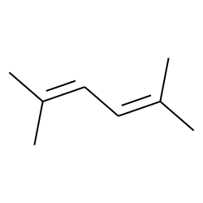

Science Motivation
- <7 fs at 210 nm (RDW) + <10 fs X-rays → sub-10 fs IRF to directly clock excited-state molecular motion
- Target: cis/trans isomerisation of 1,3-butadiene — predicted to complete in tens of fs, never time-resolved
- Heavier substituents in 2,5-dimethyl-2,4-hexadiene predicted to slow isomerisation — tests steric control of reaction pathway
1,3-butadiene

2,5-dimethyl-2,4-hexadiene